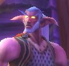

Sylvarius
Points : 0

Joué par :
Sylvarius
Joué par :
[ Information masquée ]
Age : 126 ans
Lieu de naisance : Quel'Thalas
Signe de naissance : NC
Sexe : Homme
Race : Elfe
Faction : Alliance
Formation : Guerrier
Niveau : 34
Guilde :
Mortelle OnctionArtisanat 1 : Mineur
Artisanat 2 : Forgeron
Informations hrp : Aucune.
Description : Dans la fournaise éternelle d'Ironforge, ni le soleil ni la lune n'avaient de prise sur le temps qui passait. Creusée et bâtie au cur de la montagne, la cité vivait dans la journée au rythme des coups de marteau de quelques forgerons chevronnés, et dans la nuit au brouhaha des tavernes où la bière et les rires gras étaient monnaie courante.
Il a fallu quelques semaines à Sylvarius pour se faire à l'idée d'une vie où la seule nature que l'on accepte est celle que l'on fabrique. Lui qui n'avait connu que la forêt jusqu'à l'âge adulte avait eu du mal à quitter Darnassus pour découvrir les cultures de ceux qui, désormais, étaient les alliés des Elfes de la Nuit. La rosée matinale avait laissé place à la sueur sur les fronts. Les chants des oiseaux étaient devenus des cliquetis d'armure. Les aventuriers poussaient plus rapidement que les fleurs.
Le monde change
Comment en était-il arrivé là ? Il avait suivi une voie aujourd'hui bannie. Il avait perdu ses proches un à un. Il avait pris les armes à regret. Il avait connu l'échec dans son projet le plus cher. Son esprit n'était plus que le reflet distordu de celui d'autrefois.
Tout change, même toi
Doit-on appeler cela Elune, la Lumière, ou le hasard ? Sa vie était un parcours sinueux, comme il l'avait été pour beaucoup des héros qui peuplent les territoires de l'Alliance. Et ceux de ses ennemis. L'existence était un arbre aux multiples branchages.
Le cycle des Arcanes.
Des millénaires de grandeur étaient résumés dans le creux de ses bras. Nous étions en l'an -99 du calendrier humain. Llhassa Saint-Hiver était le plus heureux des Hauts Elfes. A ses côtés, celle dont la Nature lui avait fait don, la douce et terrifiante Oliana Stormkeeper, se ravissait de voir plein de vie ce petit être issu de leur union.
- C'est un miracle de la Nature, dit Llhassa en posant un il bienveillant sur son fils.
- Honorons la fôret en le nommant ; c'est à elle que l'on doit ce cadeau, répondit Oliana.
- Il s'appellera Sylvarius. Et il suivra la voie de son père, si les Esprits le veulent.
En Quel'Thalas, la vie était partout. Dans l'air, dans les sols, dans les murs. Cette concentration n'était pourtant pas pour lasser un peuple toujours plus avide de rendre hommage à sa Terre Mère. En ces temps où les tensions elfiques étaient désormais des contes pour enfants, chacun était heureux. Les Hauts Elfes savaient qu'il faudrait un jour composer avec les Elfes de la Nuit qui, traumatisés, avaient choisis de renier la magie, près de 10 000 ans auparavant. Mais pour l'heure, il était essentiel de comprendre suffisamment les tréfonds des arcanes pour éviter de renouer avec les dangers passés : ceux de la Légion Ardente. C'est ainsi que Llhassa, avant toutes autres choses d'importance, estimait les chances de l'avenir des Hauts Elfes.
Dès les premières années de sa vie, le jeune Sylvarius Saint-Hiver vécut au sein d'une famille soudée, unie dans la sagesse des paroles et des actes. La sagesse par les actes, c'était celle qu'avait choisi Arcturus Saint-Hiver, le grand père paternel de Sylvarius. Alors que son petit fils n'avait que trois ans, et que lui-même touchait à son millénaire, il avait fait vu de suivre l'équipée qui partit, sans ne jamais revenir, à la découverte de nouvelles terres. Les druides parcouraient le rêve cristallin, et leurs rêves présageaient de sombres destinées. Il s'était mit en quête, avec quelques braves, d'un monde nouveau, et d'une destinée qu'ils espéraient pacifiste. Plus personne n'espérait malheureusement leur retour des années après leur départ.
La sagesse par les paroles, c'est donc auprès de sa grand-mère paternelle que Sylvarius la trouva. Ashzara Fraîche-Brûme était de ces Elfes patientes et volubiles, soucieuse de transmettre à sa descendance une connaissance parfaite des temps anciens. Connaître le passé était, selon elle, le meilleur moyen de mieux appréhender l'avenir. C'est donc par sa bouche qu'au fil des longues soirées d'hiver Sylvarius comprit peu à peu les éléments qui composaient son monde : la magie, la Légion Ardente, les Elfes de la Nuit et les Hauts Elfes. Mais aussi les Humains, les Nains, et les Trolls qui menacèrent jadis son peuple et les menaces qui rôdaient dans ce monde instable, encore trop jeune pour trouver les limites de la paix durable. Pour sa part, son grand père maternel, Vysterius Stormkeeper, semblait être à l'opposé. Sa sagesse résidait dans son silence, qui était aussi riche d'enseignements que ses rares paroles. Quant à sa grand-mère maternelle, Lunaë Uryanel, Sylvarius n'eut jamais le loisir de la connaître : elle était morte en donnant la vie à son premier enfant : Oliana, la mère de Sylvarius.
C'est à sa trentième année que Sylvarius commença son apprentissage. Son père en avait décidé ainsi dès sa naissance : il arpenterait la voie des Arcanes. De la magie. Avec la patience qui caractérisait la lignée, Llhassa s'enquît d'offrir à son fils un apprentissage le plus complet possible. Ils ressassèrent ensemble les origines de la magie. Ses causes et ses conséquences. Son influence sur le monde, et la soif qu'elle provoque sur ses disciples. Trois longues années passèrent ainsi. Puis Sylvarius commença à pratiquer. Invoquer de l'eau. La transformer en givre. S'en servir pour éteindre le feu qu'il créait au creux de ses mains. Chaque jour était l'occasion d'un perfectionnement millimétré. Les années se suivirent ainsi, au-delà des maléfices du monde, et loin d'eux l'idée des drames qui se tramaient dans les actes d'Aegwynn, le gardien, et de sa descendance : Medivh.
Car en l'an -37, alors que Medivh, sans que personne ne le soupçonne encore, naissait pour faire éclore le chaos, la famille Saint-Hiver était une nouvelle fois subjuguée de bonheur. Maël Saint-Hiver, frère de Sylvarius, voyait le jour. Cette fois-ci, la destinée était tracée sur les pas de sa mère : il suivrait la voie des armes et de la guerre.
Le cycle de l'Héritage.
Comme son frère, c'est à ses trente ans que Maël commença sa formation. Comme son frère, son savoir était déjà grand. Comme son frère, il connaissait déjà, sans les manier, les vertus de la patience et de la sagesse. Sylvarius était alors âgé de 62 ans. Mais il leur manquait une chose encore : l'Héritage. Autant avaient-ils été enseignés sur l'Histoire, autant celle de leur famille leur était encore inconnue. Et leur grand-mère paternelle, celle dont ils avaient tiré tout leur savoir, était décédée en l'an -16. Cependant, proche de ses mille années de vie, Vysterius Stormkeeper, choisit cette 7eme année avant l'ère nouvelle pour conter leur histoire à sa fille, mais aussi à ses petits enfants.
Cette année, l'hiver était rude, et la famille s'était réunie autour du feu. Comme si un vent glacial s'était soudainement abattu sur cette source de chaleur et de vie, la parole de Vysterius laissa son entourage sans voie. C'est le privilège de ceux dont la parole est rare : lorsqu'ils prononcent, on les écoute.
« Je me demande encore si le choix forge le destin, ou si le destin force le choix. Tout change, le monde change et nous-même, nous changeons. Pourtant, nos curs sont infaillibles. Mon grand-père se nommait Yseïs Stormkeeper. Il y a pratiquement 2 700 ans, il vivait ici, sur les sols que vous foulez de vos pieds. Et en nos terres de Quel'Thalas, son rôle était prépondérant. Il était l'un des responsables des troupes qui combattaient les Trolls de la région. Trois cent années durant, il n'a eu de cesse de tenter de repousser ces peuplades nomades, assaillant sans relâche notre territoire, et empêchant les nôtres de prospérer comme il se devait. La magie des Hauts Elfes était leur va-tout. Et attirait les convoitises. Mais notre peuple était face à un ennemi sauvage et désordonné. Mon grand-père, comme ses congénères, ne savaient prévoir les coups des Trolls. Quant aux attaques, elles étaient vaines : telle tribu était attaquée, qu'une rivale en profitait pour monter en puissance. La magie des Hauts Elfes était, je crois, devenue la clé des rivalités entre les peuplades de Trolls qui, avouons-le, régnaient sur la région. A force d'assauts et de défenses chevronnées, les troupes s'épuisèrent. Et une grande décision dût être prise : pour ne pas sombrer, les Hauts Elfes daignèrent former, à contrecur, une alliance avec les Humains du Royaume d'Arathor. En contrepartie, nous devions leur dévoiler les secrets de notre magie. Les Trolls furent vaincus.
Dépossédés de leur savoir, les Hauts Elfes avaient survécu. Et les Humains avaient tout à apprendre. Aussi, ce qui devait arriver arriva : leur utilisation désordonnée de la magie provoqua le retour de la Légion ardente sur cette terre. Cette Légion Ardente, qui, vaincue, avait pourtant provoqué le chaos parmi les Elfes, et près de 5 000 ans de stabilité précaire. Mon grand-père Yseïs fit le constat suivant : les Hauts Elfes avaient échoué dans leur quête. Il en était désormais convaincu : la magie pour laquelle il avait fait périr tant des siens n'était que source de malheur et de destruction.
Il quitta nos contrées. Et rejoignit les Elfes de la Nuit, en Aldrassil, pour une retraite et une mort lente pour un échec trop violent. Mais, là-bas, il fut frappé par la grâce d'Elune. Contre toute attente, il y rencontra ma grand-mère, Syriëlle Djinnaë. Ils fondèrent une famille. Ils eurent un enfant : Ish'Rabhan, mon père. Il ne fallut pas plus de trois décennies à mon grand-père pour se sentir Elfe de la Nuit. Il ne lui en fallut pas plus de cinq pour mourir Elfe de la Nuit. Il laissait derrière lui un échec, mais aussi une victoire : sa progéniture suivrait la voie sous laquelle il aurait aimé voir le jour. Le propos n'est pas dans la vie de mon père : il vivait simplement de récoltes et d'alchimie. Il rencontra une couturière : ma mère répondait aux douces syllabes d'Aglaë El'lielleil.
Je naquis de leur union. Les siècles passaient. Et, Alchimiste comme le fut mon père, je finis par fonder mon propre foyer : mon commerce était désormais mon ménage, et votre grand-mère s'enquît de prospérer à mes côtés. Mais les questionnements m'assaillaient. Mes racines étaient en Quel'Thalas, et mon cur était en Aldrassil avec Lunaë. Ce n'est que lorsqu'elle perdit la vie en même temps qu'elle la donnait que mon choix fût fait : ce bout d'Elfe dans les bras, toi Oliana, je choisis de renouer avec mon passé. Ma curiosité était trop grande. Je devais savoir d'où je venais. Mais mon père connaissait les raisons qui avaient poussé Yseïs à rejoindre les Elfes de la Nuit. Aussi supportait-il mal mon choix. Il m'indiqua que si je ne changeais pas d'avis, je ne serais plus le bienvenu en Aldrassil. Je partis le lendemain matin à l'aube.
Le choix forge t-il le destin, ou le destin force t-il le choix ? Suis-je acteur ou spectateur de ma destinée et de la votre ? Aujourd'hui encore, je ne le sais. Mais ce que je peux affirmer, vous l'avez compris, c'est que ces deux là (il pointe le doigt en direction de Sylvarius et de Maël) sont à moitié Elfes de la Nuit depuis 5 générations. »
Vysterius retomba dans son mutisme aussi rapidement qu'il en était sorti. Le silence était devenu, pour cette soirée, un mode de communication à part entière. Les regards suffisaient pour trahir la surprise qui s'était prise à chacun des auditeurs de l'histoire de la famille Stormkeeper.
Le quotidien reprenait cependant son cours dès le lendemain matin. Et alors que Llhassa s'occupait imperturbablement de Sylvarius, Oliana avait du mal à se concentrer sur l'entraînement de Maël. Elle venait de découvrir ses origines. A 317 ans, sa vision des choses était éclaircie. Elle qui s'était engagée dans les troupes protectrices de Quel'Thalas savait désormais d'où elle venait : l'un de ses ancêtres était un prestigieux combattant. Elle se trouvait heureuse que son père, par soif de connaissance, ait fait le choix de renouer avec son passé. Elle se trouvait heureuse également de connaître les faiblesses de son peuple. Elle ne s'en trouvait que plus forte d'avoir enfin accès à des réflexions plus poussées sur les tâtonnements de son peuple. Parce qu'elle les savait faillibles, elle en était désormais convaincue : jusqu'à la mort, elle défendrait les Hauts Elfes.
Le cycle des Douleurs.
C'est en l'an -2 que Vysterius connut la mort. L'année de son millénaire. Et les années qui suivirent annoncèrent la lente fin des Hauts Elfes. L'an 0 fut décrété lors de l'avènements de temps nouveaux : le retour de la Légion Ardente, plus violente et puissante que jamais, par l'assaut des troupes Orcs. Celle-ci gagnait chaque jour du terrain, et les royaumes humains, séparés 50 années plus tôt, choisirent de se réunir à nouveau sous une même bannière. Le royaume de Lordaeron naissait. Cela n'empêcha pas l'avancée des Orcs, et malgré la présence humaine non loin de là, Quel'Thalas fut attaquée en l'an 6 sous le commandement d'Orgrimm Doomhammer.
L'alerte avait été donnée alors que le soleil se dissipait lentement dans ses noires draperies. Oliana se rua sur son épée. Il était temps de mettre en pratique trois siècles d'entraînement. Elle traversait les allées de son royaume le souffle coupé. Elle les connaissait par cur. Mais lorsqu'elle gravit la colline qu'elle avait tant de fois arpenté, pour rejoindre les troupes, le paysage qui s'affichait devant elle semblait inconnu : une forêt dévastée, en flammes par endroits, grouillant de ces choses qu'elle voyait pour la première fois : les Orcs. L'assaut fut aussi soudain que prévisible et violent. Avant même que le combat n'ait réellement commencé, une flèche siffla dans ses oreilles, et vint se planter entre les yeux du combattant juste derrière elle. Son cur s'emplit de rage. Elle cria de toutes ses forces, et se plongea au cur de la bataille.
Le premier Orc qui se trouva face à elle empestait la sueur et bavait de rage. Ses yeux semblaient crier sa terreur, mais son corps était déterminé par une haine infinie. Sa hache faillit transpercer le crâne d'Oliana, mais elle l'évita de justesse. Terrifiante et terrifiée, Oliana abattit un large coup d'épée dans le flanc de son adversaire. Celui-ci hurla de douleur, et ne semblait que plus déterminé par le mal qui venait de lui être asséné. Son coude vînt heurter la mâchoire d'Oliana, qui tomba au sol. Encore une fois, elle évita la hache de peu. Elle se releva d'un sursaut, lorsqu'elle s'aperçut qu'un second Orc, victorieux une seconde plus tôt, se joignait au combat. Deux monstres, contre elle seule Elle devait trouver la force. Elle lança un cri perçant, qui glaça ses ennemis. Elle chargea l'un d'entre eux, et l'étourdit d'un coup de pommeau. De quoi gagner quelques secondes, dans l'espoir de terrasser le second adversaire, déjà blessé au flanc. Son épée fonça en direction du visage de son ennemi, mais fut dévié par le plat de sa hache. Elle riposta de plus belle. Chacune de ses attaques entraînait une esquive ou une parade. L'adversaire reculait, mais elle savait que son sursit était trop court. D'un coup d'il, elle put voir que, derrière, son second adversaire reprenait ses esprits et avançait vers elle en claudiquant. Autour, c'était un chaos de chocs et de cris. Elle assena un violent coup dans les genoux de son adversaire, qui, sous l'effet de la douleur, dût se résoudre à chuter sur le sol. Sa nuque était découverte. Elle sortit un poignard, et l'y planta sans hésiter. Elle venait d'éliminer son premier adversaire. Lorsqu'elle se retourna pour faire face à son autre ennemi, une seconde plus tard, elle n'avait plus le temps de réagir. La lance de celui-ci fonçait déjà en direction d'Oliana. L'armure ne suffisait pas, et son ventre fut assailli d'une douleur infinie. Hurlant de colère, l'Orc courrait au travers du champ de bataille, son trophée à bout de lance. A chaque secousse, la lame s'enfonçait un peu plus profondément dans les entrailles de l'Elfe.
Il ne fallut qu'un coup d'il à Llhassa pour voir, dans la marée sanglante, qu'Oliana était en difficulté. Sa magie était le dernier moyen de la sauver. Il se téléporta au cur de la bataille. Le feu jaillit de ses mains, et vînt heurter le dos l'Orc qui était en train de terrasser l'Elfe qu'il aimait. En se retournant de surprise et de douleur, l'Orc fit chuter Oliana au sol. Elle gémissait, mais commençait déjà à se relever. Lhassa leva une main au ciel, et une pluie de feu se mit à jaillir. Elle tomba sur son adversaire, qui s'embrasa et trépassa dans des convulsions atroce, et une odeur donnant des hauts le cur. Non loin de là, avant de subir l'assaut funestes de plusieurs ennemis, un prêtre entonna sa dernière prière pour redonner à Oliana la force de combattre.
- Tu ne dois pas être ici, cria Oliana à Lhassa. Ton savoir est plus important que ma vie. Fuis avec les enfants.
Llhassa était pétrifié de terreur, mais il savait qu'elle disait vrai. Il effleura le visage de sa chère et tendre. Puis s'en retourna au pas de course, les yeux emplis de larmes. Il savait qu'il ne la reverrait jamais. Lorsque Quel'Thalas fut définitivement vaincue, Llhassa et ses deux enfants étaient déjà loin.
Où pouvaient-ils aller désormais ? Dans la nuit noire, la douleur les terrassait. Pourtant leur cur leur indiquait d'affronter la vie encore et toujours. Llhassa, Sylvarius et Maël étaient les trois derniers survivants d'une famille prospère qui avait traversé les siècles. Leur savoir était-il voué à se perdre ? Leur passé devait-il s'envoler dans les limbes d'un monde en guerre ?
Le choix forge le destin le destin force le choix
Llhassa avait choisi d'être maître de ses actes. Il ne laisserait le monde lui dicter son comportement. Il devait permettre à ses enfants d'entrer dans l'âge adulte, et à leur tour, voler de leurs propres ailes, forts de leurs expériences et leur savoir. Sylvarius, à 97 ans, était déjà un adolescent. A 39 ans, Maël semblait déjà précoce dans l'art que sa mère, désormais défunte, lui avait inculqué. Oliana était morte pour cela : il devait se faire un devoir de poursuivre le chemin pour guider ses enfants vers leur propre destinée. Où pouvaient-ils désormais aller ? Il connaissait maintenant parfaitement le sang qui coulait dans les veines de ses enfants. Hauts Elfes mais aussi Elfes de la Nuit. Il ne voyait qu'une destination : Ils faisaient route vers Aldrassil.
A la grande surprise de Llhassa, ils y furent accueillis avec de nombreux Hauts Elfes, fuyant la barbarie qui venait d'assaillir leurs terres. Mais, pour se réfugier sur les terres des Elfes de la Nuit, ils devaient faire une concession, non négociable : abandonner toute forme d'étude et de pratique de la magie. Il avait choisi de forger son destin et, déjà, le destin forçait son choix : il n'avait d'autre possibilité que d'accéder à cette requête, pour le bien de ses enfants. Et c'est dans la douleur qu'il consentit sincèrement à faire une croix sur toute une vie passionnée dédiée à la magie. En une nuit, il avait perdu son cur et son âme. Il n'avait plus de passé. Par ses enfants, il ne lui restait plus que l'avenir.
Maël se fit rapidement à la nouvelle vie en Aldrassil. Sa mère lui avait appris les rudiments, et il pouvait désormais arpenter seul la voie. Ses progrès impressionnaient même par instants les sentinelles qui protégeaient la ville. Mais Sylvarius était plus décontenancé. Comme son père, sa vie fut dédiée aux Arcanes. Une vie qui était désormais révolue. Il avait goûté à leur pouvoir, et rechignait à s'en séparer. Il ne pouvait cependant faire autrement. Pour la mémoire de sa mère, son père l'invita à prendre les armes sous la tutelle de son frère cadet. Sylvarius s'y refusa dans un premier temps. Il préférait rester auprès de son père, à vivre de quelques marchandages pour gagner le pain quotidien. Lorsque le petit commerce fut établit, il finit par se résoudre à regrets à suivre les enseignements quotidiens de son frère cadet. Mais cette période ne dura que quelques années. Car la Légion Ardente, cette fois-ci, attaquait Aldrassil. Une nouvelle fois, les Elfes furent vaincus. Et c'est cette fois-ci sur l'île de Teldrassil, à l'extrême Nord de Kalimdor, que les Elfes se réfugièrent. Mais cette fois, il y avait tout à reconstruire. Le nouvel arbre monde, mais aussi toute la grandeur d'une espèce.
L'Alliance prit à ce moment là une tournure très concrète, face au danger. Les Elfes, pourtant hostiles à toute forme d'ouverture avec les autres peuples, durent se résoudre à pactiser avec les Humains, mais aussi leurs nouveaux compagnons de guerre : les Nains et les Gnomes. Quelques héros de l'Alliance se sacrifièrent pour repousser la Légion Ardente vers la brèche qui les reliait à leur monde de furie, Draenor. C'était en l'an 8 et la paix était retrouvée. Mais chacun savait que cela était provisoire.
Cependant, cette nouvelle période permit de faire la prospérité des Saint-Hiver. Désormais pleinement versé dans le commerce, Llhassa vendait aux voyageurs et aventuriers des races alliées en visite en Kalimdor des produits exotiques : vêtements, vivres, armes. Ces achats faisaient le bonheur de quelques Humains, mais surtout de très nombreux Nains. Chaque semaine, certains venaient de leurs contrées lointaines dans l'objectif spécifique d'acquérir quelques objets elfiques de valeur. Les années passèrent ainsi, et si le commerce de Llhassa était mal perçu par certains Elfes, les Saint-Hiver étaient résolus à vivre avec leur temps. Ils amassèrent une somme d'or suffisamment conséquente pour s'offrir un arbre en Darnassus, sur la terrasse des artisans. Et si certains, aigris d'avoir perdu leur autonomie, leurs reprochaient parfois leurs actes et leurs origines, les Saint-Hiver avaient eu leur revanche sur une vie qui ne les avait pas épargnée ces deux dernières décennies. Enfin, certes sous des formes nouvelles, ils semblaient retrouver un semblant de prospérité et de bonheur. Sylvarius et Maël, eux, poursuivaient leur labeur quotidien, estimant cependant qu'ils avaient connu suffisamment de guerre pour toute une vie. Conscients que de nouvelles menaces guettaient leur nouveau peuple, ils voulaient être prêts à défendre au mieux ceux qui les avaient accueillis. Et sauvés.
Ce bonheur, encore une fois, n'était pas fait pour durer. Cinq ans après s'être installés en Teldrassil, le commerce de Llhassa Saint-Hiver était bien établi. Et depuis le début de l'an 26, il connaissait un nouvel essor. De leur nouvelle capitale, les Elfes avaient déployé un réseau militaire, une fois la Légion Ardente vaincue, pour reprendre de ci de là contrôle sur Kalimdor. Et le port d'Auberdine, en Darkshore, par ses liaisons navales avec les terres Naines, était un lieu rêvé pour faire du commerce. Chaque semaine, il y amenait ses marchandises, qui se vendaient à même l'auberge de la ville à des Nains rieurs et bavards.
Cependant, Kalimdor n'était pas devenue sûre pour autant. Car si la Légion Ardente avait été vaincue, un nouvel ennemi apparaissait : la Horde, sous la tutelle des Orcs libérés de leur ancien maître démoniaque, et résolus à vivre sur ces terres qu'ils ne pouvaient plus quitter, avaient fondé sous la régence de Thrall une coalition avec les Trolls et les Taurens. Les Réprouvés étaient également leurs sombres alliés. Ces rejetons rebelles de la Légion Ardente, revenue sous des formes malicieuses aux alentours de l'an 20, avaient réussi à s'extraire du joug de ceux qui, désormais, orchestraient les méfaits de la Légion Ardente en ce monde : le Roi Liche et son second, le Prince Arthas. Cette situation, complexe, rendait les terres alliées sujettes à de régulières escarmouches. Mais les soldats, jusqu'à présent, avaient tenu bon.
Ce jour là, Llhassa avait reçu une grosse commande. Il demanda donc à ses deux fils de porter avec lui jusqu'à Ashenvale les lourds paquets qui se transformeraient bientôt en pièces d'or à l'effigie du roi Magni. La ville d'Auberdine était étrangement calme, ce jour là. Llhassa et ses fils s'installèrent sur le ponton, en attendant le bateau qui amènerait leur client. Mais à ce moment là, l'improbable horreur survint : sorti de nulle part, un Orc tout de sombre vêtu surgit dans le dos de Llhassa, un poignard à la main. Il saisit l'Elfe sous les yeux effarés de ses deux enfants. Le drame ne dura qu'une seconde : le père de Maël et de Sylvarius gisait, la gorge tranchée, mort dans une mare de sang. Des cris tribaux surgirent alors de l'entrée de la ville : des dizaines d'Orcs, Taurens, Réprouvés et Trolls attaquaient les lieux. Au nom de quelles représailles ? Certainement suite à des escarmouches en Ashenvale, une région proche et stratégique, tant pour l'Alliance que pour la Horde. Horrifiés, les deux frères virent, aux côtés de l'Orc qui venait d'assassiner leur père, deux de ses comparses sortir également des ombres, comme des apparitions fantomatiques. Vision difficilement supportable : il s'agissait d'être morts et décharnés, des Réprouvés. Terrorisé, Sylvarius se jeta à la mer. Personne ne fit plus cas de lui. Mais son frère, Maël, convaincu de sa force, voulait lutter. C'était alors un drôle de manège qui se jouait autour de lui : il attaquait, les autres fuyaient ses coups, comme refusant de combattre. D'autres ennemis de la Horde finirent par joindre le ponton. Maël était encerclé. Chose étrange, personne n'eut à cur de le vaincre. Mais dans son dos, un Troll robuste lui déposa un sac de jute sur le visage et les épaules. Il criait d'horreur, mais Sylvarius, tétanisé, ne savait que faire pour aider son frère : même l'essentiel de la garde avait été vaincu. Et, leur prisonnier avec eux, les membres de la Horde fuyaient déjà avant que les renforts n'arrivent. Sylvarius restait seul, effaré. Après de longues minutes, il sorti de l'eau, atrocement choqué.
Trop de morts. Les cimetières étaient saturés. Le soir même, c'est donc aux confins de Teldrassil, dans un village nommé, comme l'ancien arbre monde, Aldrassil, que Sylvarius enterra et honora, seul, les funérailles de son père. Il était désormais seul au monde C'est ainsi, à quelques jours de ses 126 ans, que Sylvarius entrait de pied ferme dans la vie adulte.
Le cycle de la Vaillance.